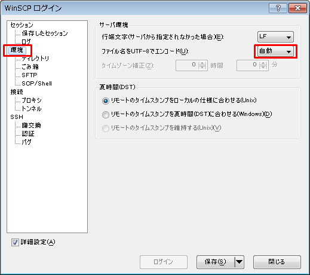
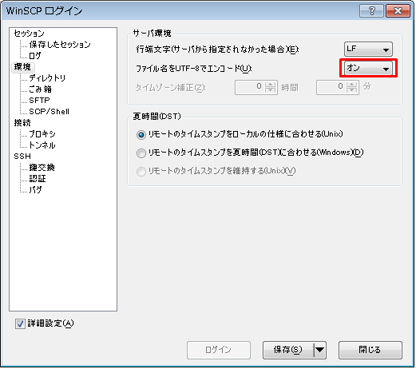

WINSCP文件名显示乱码问题 8月 25 2014 技术 最近捣鼓树莓派用的最多的软件就是putty跟winscp。在日文系统下，winscp的文件列表里的中文文件名全是乱码。后来发现只要在登录设置窗口里把utf-8编码的开关打开就能正常显示了。(注意，是登录设置窗口。不是主菜单里的环境设置)修改前(默认) 修改后 Newer 生命，宇宙以及一切的答案 Older 利用webpy搭建一个简单的网页版hexo编辑器